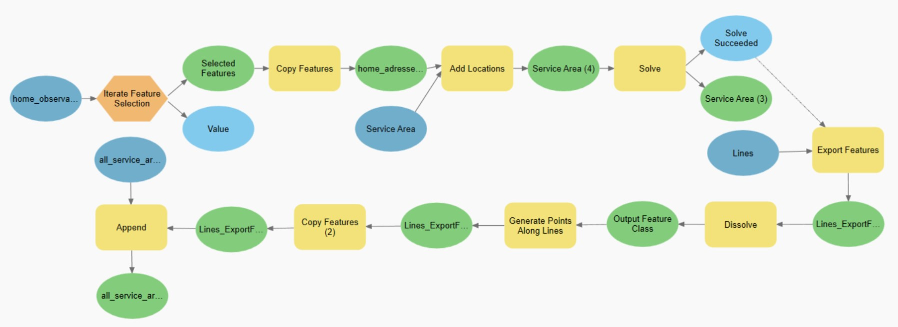

Activity patters from GPS data (work in progress)
Published on March 12th, 2023
In my master’s thesis, I looked at movement of people and how much time people spent in spaces using GPS data. I wanted to look at this from the perspective of places. The maps I am showing in this blog post are from the perspective of the raster cells of a resolution of 50 meters, how much time has been occupied by people in the time frame and then compared to what could be expected. Throughout the thesis, I have used a kernel density analysis to create the raster data and the cells I am using to study as places. A kernel density is creating a form of a heat map.
Before I started my analysis, I first wanted to check the spatial distribution compared to the general population distribution in the Oslo metropolitan area. I did not have data for the population distribution, but I used an address list by apartment level from Kartverket (Norwegian Mapping Agency) as a proxy for population distribution. The reason I wanted to do this is that I wanted to see how representative the respondent’s spatial distribution was. As seen in the map below, comparing the spatial distribution of the respondents with all address points showcases that the spatial distribution is relatively representative despite its small sample size.
 This is the overview using a kernel density of the home addresses of the 226 respondents, compared to the address dataset
on apartment level from Kartverket. As a comparison of spatial distribution of the respondents
This is the overview using a kernel density of the home addresses of the 226 respondents, compared to the address dataset
on apartment level from Kartverket. As a comparison of spatial distribution of the respondents
Creating the model to simulate the potential for travel
The next step of the process was to create a model which could simulate the potential activity of the respondents to better compare the use of space in Oslo. Due to security reasons, the address points of respondents and trip information was separated. This resulted in me having to use the average trip length (3885.9 meters) as the distance for the service area analysis I did for each address.
 The iterating model is done for each address of the 273 respondents to calculate their travel potential.The model iterates over the point file of the addresses of the 226 respondents. For each address, it adds it as a location for a Service Area network analysis and then exports the line file from the service area. I wanted to simulate how the GPS signal records the user's position and is not a continuous signal. I found the average distance between each GPS recording from the trips by calculating the average distance between each vertices of the line polygons (33.9 meters). I then dissolved the lines from the service area and sampled points from this file every 33.9 meters using “generate points along lines”. Lastly, I appended this feature to the output file.
The result of this model was a file with 4.129 million points. Similar to the GPS recordings from the respondents, I made a Kernel Density analysis of the travel potential of the respondents to have a better comparison for the use of space in the Oslo Metropolitan area.
The result of Kernel Densities of the GPS observations of the respondents and their modelled potential travel areaComparing the observed with the expected
To compare the results more easily and accurately, I created a Normalized Difference Index of the Observed and expected
raster layers. To do this I simply used the formula in the raster calculator for the Kernal Density results:
(Observed - Expected) / (Observed + Expected)
As I used the average trip distance for the potential for travel, there were a lot of areas that could never be reached
by the model. To make the map more readable and highlight the high values that actually could be reached, I excluded the
value 1 from the map as -1 (Blue) is a very high value in expected and low in observed, and 1 (Red) is a very high value
in observed and a low value in expected.
 The NDI of the Kernel Densities of GPS observations and simulated expected potential. Blue = Higher Expected.
Red = Higher Observed
The NDI of the Kernel Densities of GPS observations and simulated expected potential. Blue = Higher Expected.
Red = Higher Observed
Not surprisingly there is more activity around transportation arteries and hubs. However, this is the type of map I used to further compare rush hour with non-rush hour, and weekend vs non-weekly observations.
Considering the temporal dimension
When I compared the NDIs of rush hour vs non-rush hour and weekend vs workdays, I inspected the cell statistics of the raster. I knew my sample size was very small for quantitative analysis, even though the spatial distribution had been pretty good. My reasoning was that values of either 1 or -1 are cells where there was no overlap of the compared raster data. This means that for the rush hour map, a cell with the value 1 or -1 were cells that were occupied by people in rush traffic or outside of rush traffic. The overwhelming majority of cells had the value 1 or -1 for both the rush hour map and the weekend map. This solidified that my master’s thesis would only be exploratory in nature and focused on methodology rather than findings.
To compare rush traffic with non-rush traffic, I used the Norwegian Public Roads Administration’s time on rush hour tax as the temporal divider. Creating an NDI comparing this selection to each other resulted in this map.
 Red = higher values for rush hour. Blue = higher values for non-rush hour.
Red = higher values for rush hour. Blue = higher values for non-rush hour.
The rush traffic map reveals some interesting spatial patterns indicating commute patterns. There is also an indication that people tend to move more outside of urban areas outside of rush traffic. However, it is important to keep in mind the small sample size for the map in general. The weekend vs non-weekend map was simple to divide using Saturday and Sunday as temporal dividers.
 Red = higher values for weekend. Blue = higher values for workdays.
Red = higher values for weekend. Blue = higher values for workdays.
For the weekend map, it is clear how much greater the extent of travel individuals has during weekends compared to workdays. Especially travelling in forests or outside of urban areas.